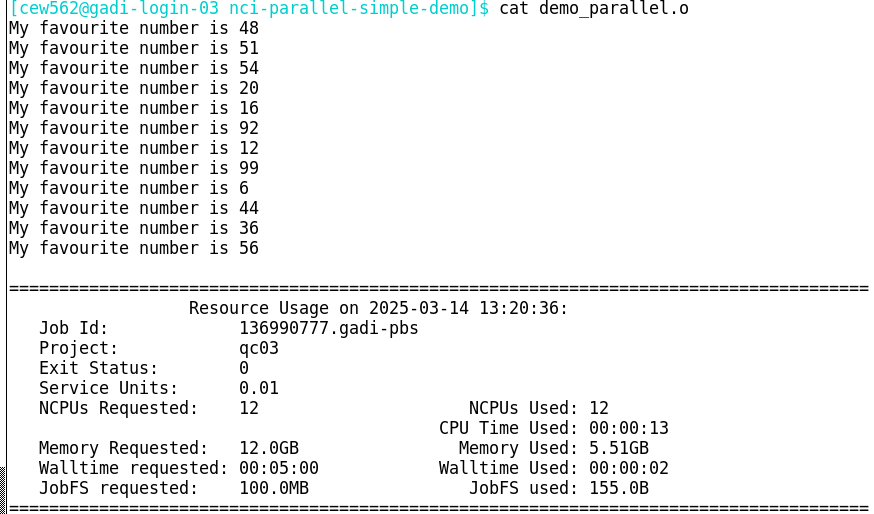

Running embarrassingly parallel jobs on Gadi
TO BE COMPLETED
Introduction
In this section, we will discuss how you can run embarrassingly parallel jobs on Gadi using the nci-parallel utility in place of the Artemis job array method.
The main challenges users may face adapting Artemis workflows to Gadi are:
- Job arrays not supported on Gadi
- Gadi walltime limit of 48 hours
- Adjusting PBS directives to suit Gadi requirements and queue structure
- Lack of internet access for Gadi compute nodes
- Data transfer
- Understanding NCI accounting of KSU, disk and iNode limits
- Automatic 100-day Gadi /scratch purge policy
- Software installation and version upgrades on Gadi
In this section, we will look at the first challenge on this list. For the remaining challenges, please visit the specific linked content. We will run training sessions on some of these during the lead up to the Artemis decommission date.
Embarrassingly Parallel jobs on Gadi
A parallel job is a job that is broken down into numerous smaller tasks to be executed across multiple processors, nodes, or cores simultaneously to speed up computations. For example, operating the same analysis over different input files, over different parameter values, or by dividing a large computational task into smaller subtasks that run concurrently, using shared memory or distributed computing.
Embarrassingly parallel jobs are a specific type of parallel job where the tasks are completely independent of each other and do not require inter-process communication or shared memory. These types of jobs can be trivially parallelized by running each task separately on different cores or nodes.
On Artemis, we could use the #PBS -J <range> directive to submit arrays of embarrassingly parallel tasks. On Gadi, job arrays are not supported. In order to simplify embarrassingly parallel jobs without the use of arrays, NCI have created a tool nci-parallel to be used with OpenMPI for distributing parallel tasks across available compute resources on a Gadi queue.
Using nci-parallel
Use of this utility will typically require 2-33 job files:
- PBS script that launches the parallel job with the requested overall size (how many nodes/CPUs) plus the details of how many CPUs to assign to each task, and how many tasks to run concurrently
- The input arguments file or command file. This is a text file that provides a new set of arguments/commands per line. Each line of the input arguments file/commands file is used as the input for a separate task
- The task script. This is the script file that contains the commands to run the job and uses the arguments provided by the input arguments file/commands file. For some tasks where the command fits on a single line, a task script may not be required and the commands file may be sufficient.
NCI provides an example where the input to the task script (in this case, named test.sh) is a single numeric value. The command test.sh <value> is included in the input argument file, as many times as needed for the job (in this case, 1000). Another way to do this (demonstrated in the example below) is having an input argument list that does not include the name of the script file. The name of the script file is instead included within the PBS script. Both methods achieve the same result, the user can choose whichever they prefer.
Option 1: task script call with arguments is provided in a command file
Option 2: task script call is combined with arguments by the PBS script
Option 3: no task script, simple one-line command and arguments provided in a command file

For complex commands/arguments files, where the creation of these cannot easily be achieved with a simple for loop or similar on the command line, an optional fourth script may be required to make the input arguments/commands file. An example of this may be where the inputs are derived from a complex metadata file or require some further manipulation prior to generating the input/arguments list. A make inputs script that is saved alongside the parallel script trio is useful for reproducibility and portability.
Care must be taken to ensure the task script reads in the input arguments correctly. Always run a single task small test before submitting the full parallel job! To check that the task script reads in the arguments correctly, this need not be done on the compute nodes. You can run a quick test on the login node where your task script prints out the arguments it reads in from the input arguments file then exits before running any analysis.
Simple example
Below is a trio of job files to run a very simple demonstration of nci-parallel.
Each parallel task requires only 1 CPU. The input file demo.inputs contains 12 input arguments, and the PBS directives request 12 CPU, so this means all tasks will execute concurrently, ie at the same time. If 6 CPUs were requested for the job, then the first 6 tasks would run, and the next tasks would be executed as those initial tasks completed, ie only up to 6 tasks could run concurrently.
Job file 1: PBS script that launches the parallel tasks
#!/bin/bash
#PBS -P qc03
#PBS -N demo
#PBS -l walltime=00:05:00
#PBS -l ncpus=12
#PBS -l mem=12GB
#PBS -l wd
#PBS -q normal
#PBS -W umask=022
#PBS -o ./demo_parallel.o
#PBS -e ./demo_parallel.e
set -e
# Always load nci-parallel here
module load nci-parallel/1.0.0a
# Also load tool modules here, they will be inherited by the parallel tasks
# modules...
# Number of CPUs per parallel task
NCPUS=1
# The task script to run
SCRIPT=./demo.sh
# The input arguments list
INPUTS=./demo.inputs
#########################################################
# configure parallel
#########################################################
# Number of concurrent tasks to run per node
M=$(( PBS_NCI_NCPUS_PER_NODE / NCPUS ))
# Combine the task script with the arguments (makes a command file)
sed "s|^|${SCRIPT} |" ${INPUTS} > ${PBS_JOBFS}/input-file
# Run the number of tasks per node times the number of nodes concurrently with mpi
mpirun --np $((M * PBS_NCPUS / PBS_NCI_NCPUS_PER_NODE)) \
--map-by node:PE=${NCPUS} \
nci-parallel \
--verbose \
--input-file ${PBS_JOBFS}/input-fileObserve the equations in the script above:
M=$(( PBS_NCI_NCPUS_PER_NODE / NCPUS ))
M = 48 / 1
M = 48The value of M sets the maximum number of tasks that can run per node in the requested queue, based on the chosen provision of CPU per task. PBS_NCI_NCPUS_PER_NODE is an environment variable that is set based on the queue, in this case the normal queue which has 48 CPUs per node. The value of the bash variable NCPUS is set by the user in the PBS script, and is distinct from the environment variable PBS_NCPUS which is the total CPUs requested by the job in the directive #PBS -l ncpus=<num>.
mpirun is used to run parallel jobs with the MPI (Message Passing Interface) framework. It allows you to execute the program across multiple processors or nodes. When you load the nci-parallel/1.0.0a module, openmpi v. 4.1.0 is loaded as a requirement.
--np specifies the number of processes for MPI to run in parallel. This is determined by the number of tasks that can run on each node (M), and the number of nodes requested (requested CPUs divided by number of CPUs per node in that queue):
mpirun --np M * PBS_NCPUS / PBS_NCI_NCPUS_PER_NODE
mpirun --np 48 * 12 / 48
mpirun --np 12The next part of the mpirun command --map-by node means that processes will be distributed evenly across all nodes requested by the job. PE=${NCPUS} (‘processing elements’) indicates that each distributed task will be allocated ${NCPUS} CPUs, which is a user-defined variable.
The arguments --verbose and --input-file are provided to the nci-parallel utility, which is the application being run in parallel. Run nci-parallel -h to see other available arguments. The input file is where nci-parallel reads the task commands from; each line of the file is treated as a separate command to be run as a parallel task. If the number of lines in the input file exceeds the number of processes MPI can run in parallel/simultaneously (ie, the value given to mpirun --np <value>), the commands are assigned to resources in order, starting from line 1, until all resources are in use. As a running task completes, the next task in the list is assigned to those now-free resources, until either all input lines have been assigned to resources and the tasks complete, or the job meets a fatal error (such as out of walltime).
Challenge: How many tasks could run per normal node if NCPUS was set by the user as 6, and how many tasks could run concurrently if this job requested 10 normal nodes?
normal node
M=$(( PBS_NCI_NCPUS_PER_NODE / NCPUS ))
M = 48 / 6
M = 8normal nodes
mpirun --np M * PBS_NCPUS / PBS_NCI_NCPUS_PER_NODE
mpirun --np 8 * 480 / 48
mpirun --np 80Job file 2: the input arguments file
A plain text file that contains the arguments for each parallel task, one per line. Since this is a simple file it can be made easily on the command line. More complex arguments/commands files may require a helper make inputs script as a fourth member of the file set for the parallel job.
This file was made by:
shuf -i 1-100 -n 12 > demo.inputs51
20
16
92
12
99
54
48
6
44
36
56Job file 3: the task script
A simple script that reads in the single argument and executes the command. Note: this script must be executable! If not, the job will fail with permission denied errors.
#!/bin/bash
argument=$1
echo My favourite number is ${argument}Now to run the parallel job:
qsub demo_run_parallel.pbsNote that unlike job arrays, this is a single job so when you run qstat, you will not see the square brackets denoting a job array that you are familiar with on Artemis. To qstat, it will appear as any other non-parallel job.
Once the job completes, check the job logs. Since the task script in this example did not redirect the output, it was by default printed to the PBS .o job log:

Note that the order of the output differs from the order of the input. This is because the tasks are independent and executed in parallel - so it is not good practice to allow important output to be sent only to the .o log file like this! Always redirect your output!
Now for the .e log:

Each parallel task has a line containing information including the ID of the node it was run on and the individual task exit status.
Always check the exit status from the PBS .o log AND the per-task exit statuses from the .e log! An exit status of 0 for the parent job does not mean all tasks completed without error. And of course, as always, check the outputs, as an exit status for both parent job and task still does not necessarily dictate a successful job.
Count the number of tasks with exit status 0 - this should equal the number of lines in your input arguments/command file:
grep "status 0" demo_parallel.e | wc -lIf the number if tasks with exit status 0 is less than the number of inputs, either the job has met a fatal error (and the PBS .o log will have a non-zero exit status), or some individual tasks have failed. If all tasks have started, they will have an exit status in the .elog, so you can retrieve the failed tasks to a new input file to be resubmitted (after first troubleshooting the error). For example:
grep -E "status [1-9]" demo_parallel.e | awk -F"status [0-9]+: " '{print $2}' > failed.inputIf however the tasks didn’t start for example the job exceeded walltime before they were allocated to resources, they won’t have an entry in the .elog:
You would need to extract the lines from the original input file that do not have ‘exited with status 0’ within the .e log to make the failed tasks list.
MPI ‘map-by’ parameter and NUMA nodes
The --map-by parameter in the mpirun command specifies how processes should be distributed across the available resources (eg nodes, sockets, cores, or NUMA nodes).
The example on the NCI page shows map-by ppr and the simple example above shows map-by node. What’s the difference?
ppr stands for processes per resource, where processes is number of tasks assigned to that resource, where ‘resource’ may be node, socket or NUMA. A NUMA (Non-Uniform Memory Access) node/domain is a physical unit consisting of one or more CPU cores and the memory directly attached to them.
The mpirun command in the NCI example:
PBS_NCPUS=384
export ncores_per_task=4
export ncores_per_numanode=12
mpirun -np $((PBS_NCPUS/ncores_per_task)) --map-by ppr:$((ncores_per_numanode/ncores_per_task)):NUMA:PE=${ncores_per_task}Expands to:
mpirun -np 384/4 --map-by ppr:12/4:NUMA:PE=4
mpirun -np 96 --map-by ppr:3:NUMA:PE=4Remember, --np specifies the number of processes for MPI to run in parallel, in this case, 96 of the 1,000 input tasks can run simultaneously. Processes (tasks) per resource is 3 and the resource is given as NUMA. So the job will run 3 tasks per NUMA node, each with 4 (PE=4) CPU.
The Gadi queue structure page states there are 12 CPUs per NUMA node on the Cascade lake normal queue, so this job fits nicely on that architecture. What if you wanted to run tasks with more CPUs than available on a single NUMA?
For example, for 24 CPUs per task, the equation would yield:
mpirun -np $((PBS_NCPUS/ncores_per_task)) --map-by ppr:$((ncores_per_numanode/ncores_per_task)):NUMA:PE=${ncores_per_task}
mpirun -np 384/24 --map-by ppr:12/24:NUMA:PE=24
mpirun -np 16 --map-by ppr:0.5:NUMA:PE=24This job would fail with non-zero exit status and display the error “Your job has requested more processes than the ppr for this topology can support”.
For jobs where more CPU (or memory) is required per task than exists on a single NUMA node, the map-by node method shown in the simple example above can enable this. For tasks of 24 CPU, memory is obtained across 2 whole NUMA nodes. For tasks of 16 CPU each, memory is obtained from 2 NUMA nodes, and some NUMA nodes wll provide memory and CPU to 2 tasks. To assess the effect of this memory latency on your workflow, benchmarking is recommended.
Mapping by node instead of NUMA node can also help increase CPU utilisation when the number of CPUs on the NUMA node is not evenly divisible by the optimal CPUs per task as chosen by benchmarking. For example to use 8 CPUs per task, mapping by NUMA node on the Cascade Lake normal queue would lead to 4 CPU per NUMA node idle, restricting each node to run only 48/12 = 4 tasks per node, rather than 48/8 = 6 tasks per node.
What is the advantage to mapping by NUMA node? The CPU cores within a NUMA node can access the memory within that NUMA node more quickly than the memory located in other NUMA nodes. Your jobs may have improved performance, especially for memory-intensive applications, if the memory per task is within a single NUMA domain. As always, it is ideal to perform benchmarking to determine the optimal resource configuration for your workflow.
Parallel job efficiency
Benchmarking should initially be done on the single task, in order to optimise resource requests for the full job. In some cases, efficiency can decline for parallel jobs, and this results in an increased walltime per task and overall SU cost for the job. Where possible, benchmarking tests should also be performed at scale, to assess any decline in performance when the workload is scaled up. This can enable you to further optimise, or allow for the decline in efficiency when requesting walltime, to prevent avoidable job failures due to running out of walltime.
For example, you have determined the optimum resources for your tasks to be 12 CPU and 48 GB mem, for just under 20 minutes. You have 1,000 tasks to run. This equates to 250 normal nodes. Prior to submitting a 20 minute 250-node job, you should:
- Test 4 tasks in a parallel job - that’s one full node. Does the CPU efficiency remain the same as benchmarked for the single task?
- Test a handful of nodes, say 10 - does the CPU efficiency remain the same as benchmarked, now 40 tasks are running concurrently?
- If so, go ahead and submit the remaining tasks (remember to remove the tasks already run through this benchmarking, if you have done this on full size inputs). If not, what happened to the walltime? If the efficiency loss was drastic and walltime much worse, consider reoptimising. If the decline was minimal, extrapolate from this to estimate the walltime required for the full job, potentially running a larger task lot first (for example the next 100 tasks in the input argument list) for more accurate extrapolation.
- Keep records of the benchmark runs and full run resources for future reference. We recommend the Gadi usage script which will summarise compute resources into a tab delimited table for ease of review and record keeping. If you prefer to rely on your Gadi job logs alone for long term records of your jobs usage, please ensure to back these up to RDS as they will be purged from scratch in time.
This may sound like a lot of extra work, but it could save a large amount of KSU as well as walltime and your own frustration in the long run. Understanding how well your workload scales to a parallel job is important prior to submitting a large multi-node job like this.
One disadvantage of nci-parallel jobs
In job arrays, each subjob of the array is a discrete task consuming a chunk of resources that may or may not be on the same node as other subjobs of the array. When that subjob completes, those resources are returned to the cluster and become available for other jobs. As such, they are no longer consuming CPU hours and accruing resource usage to the user’s account. In contrast, nci-parallel reserves the entire collection of resources for all parallel tasks in the job as a single large chunk. This means that tasks that have completed while other tasks are still running are still consuming those resources (even though they are idle) and thus still being charged for. Because of this, parallel jobs where there is a large distribution of walltime across the tasks are likely to result in poor efficiency and a lot of wasted resources.
There are a number of strategies you can employ to mitigate this:
- timeout - see https://opus.nci.org.au/spaces/Help/pages/248840680/Nci-parallel…
- for small numbers of parallel tasks, use a loop, with varying walltime based on expectations for the task, adding a sleep within the submission loop
- sort tasks by expected order of walltime, longest to shortest, and request resources such that less than the total number of tasks are running in parallel
- group tasks, for example instead of one large job, run a “fast”, “medium” and “slow” job with the tasks grouped by expected walltime
Memory management for nci-parallel jobs
The CPUs provided to each parallel task are controlled by the user-defined bash variable NCPUS within the PBS script. However, each of those parallel tasks has access to up to the amount of memory requested to the job in PBS -l mem=<mem>.
In order to avoid memory contention, you should:
- First benchmark the tasks to understand their memory requirements, monitoring this during the job with
nqstat_anuor a more advanced tracing tool, as well as from the completed job log. Use the maximum memory required for each task as the basis for requesting your resources. - If the tool permits, provide a maximum memory limit to the tool that is in line with the CPU request, for example for 4 CPU tasks on the
normalqueue, cap the amount of memory each task can use to 4 * 4 = 16 GB memory within the task script.
For jobs where memory contention is present, the first tasks to start will consume the memory, and the remaining tasks will either run far slower than optimal, or meet a fatal error due to memory exceeded. Depending on the tools/commands being run, in some cases this may kill the entire job, or in some cases only the affected tasks will die.
Example parallel jobs
Example 1: Genomics
Parallel processing in genomics can facilitate rapid processing of terabytes of raw DNA sequencing data. These workloads are highly amenable to parallel processing for 2 reasons:
- The same processing steps typically need to be run on many different samples
- Most of these processing steps can be further broken apart into smaller subtasks
By parallelising at the level of sample, we may have say 10 or 100 tasks in a parallel job, depending on the number of samples in the analysis. Yet if we break the processing steps each into smaller subtasks, we can then parallelise to a much higher level of throughput, number of samples * number of subtasks.
One excellent example for how HPC and distributed computing can massively speed up processing is the case of mapping the DNA sequences to the reference genome. In sequencing projects, each sample may have a few hundred million DNA sequences. Users typically map all of these in one job, that may take several hours and can multi-thread up to all of the cores on a node natively. However, since each DNA sequence is mapped independently to the reference, we can physically split the input into numerous smaller inputs and perform the mapping in parallel.
Say we have 100 samples, each with approximately 400 million sequences each. To parallelise by sample, we could run 100 tasks concurrently. If we split the input into chunks of 10 million sequences, each sample would have 40 inputs, so we could run a parallel job with 100 * 40 = 4,000 tasks. If each task required 5 minutes on 6 CPU, that’s 6 * 4000 = 24,000 CPU = 500 nodes for 5 minutes to run all tasks concurrently. This exceeds the maximum nodes per job of 432 for the normal queue. We could run 2,000 tasks concurrently, and this would require double the walltime for half the nodes, so 10 minutes on 250 nodes. 250 nodes is a large chunk of resources, so possibly 1,000 tasks concurrently for 20 minutes on 125 nodes would be easier to schedule and result in less queue time. This is a massive speedup compared to the ~ 6-8 hours required to process all 400 million sequences in one task.
Now how would we set this up? First up would be splitting the inputs, then running the mapping job, then performing a merge to per-sample final output. We won’t cover the details of splitting or merging here as that is domain-specific, but we will look at the trio of scripts to demonstrate how the parallelisation is created.
Given the large number of tasks and complexity of the metadata, we find an additional script is required: we call this the make_inputs script, which reads your metadata and creates the input arguments file. We then have a set of 4 scripts that are inextricably linked for the job. A script to make the input arguments list if not required for all jobs, only when the arguments are complex. Often, a simple loop is sufficient, for example to iterate over a range of numbers or files.
In the example scripts below, the metadata has been simplified for clarity.
For this workflow, only the make inputs file would be edited each time the analysis was run on a new set of input samples, and the PBS script directives would be adjusted based on the number of tasks to be run. The input arguments file is created by the make inputs script, and the task script would not need to be edited at all, as long as no changes to the tool commands were required for example updated tool arguments, parameters etc.
Example scripts
TBA demo 4 scripts
Testing it before you run the full job
eg just run it on 4 tasks and print out the command (wrap in printf for example )
Checking the parallel job
- check outputs - right number, right name, right format, right size
- check PBS .o for exit 0 and expected mem, time, cpu usage
- check .e log file and how to check it re “exited with status 0”
Example 2: Tom TBA
Tom TBA